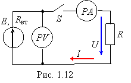
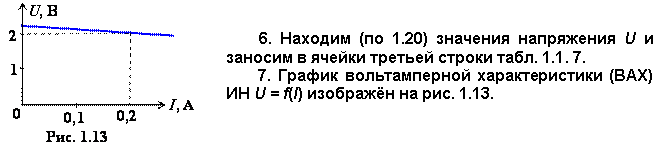

При разомкнутом ключе S показание вольметра PV равно 2,1 В (рис. 1.12). Когда ключ замкнут, амперметр PA фиксирует ток 1 А. Сопротивление приёмника R = 2 Ом.
Найти:
• ЭДС Е источника
напряжения, его внутреннее сопротивление Rвт и напряжение U на зажимах приёмника;
• построить график внешней характеристики
ИН U = ƒ(I) при изменении сопротивления нагрузки от 1 до 40 Ом.

Р е ш е н и е. 1. Когда цепь разомкнута,
вольтметр фиксирует значение напряжения ХХ, практически равное значению ЭДС,
т. е. Е = Uх = 2,1 В.
2. Для определения внутреннего опротивления Rвт источника напряжения воспользуемся законом Ома для всей цепи:
откуда
3. Напряжение на зажимах приёмника (и источника)
U = E − RвтI = RI = 2,1 − 0,1·1 = 2 B. (1.20)
Для построения графика внешней
характеристики ИН U = E − RвтI = 2,1 − 0,1I необходимо предварительно рассчитать ток I при различных значениях сопротивления R приёмника. Для этой цепи задаём значения R (см. верхнюю строку табл. 1.1) от R = ∞ (режим ХХ, при котором ток I = 0, а напряжение U = E = 2,1 В), до R = 0 (аварийный режим КЗ для ИН, при котором напряжение U = 0, а ток I = Iк = E / Rвт = 2,1 / 0,1 = 21 А).
5. Определяем значения тока при
других значениях R по уравнению и заносим в соответствующие ячейки второй строки табл. 1.1.
Т а б л и ц а 1.1


|
R, Ом |
0 |
1 |
10 |
20 |
40 |
¥ |
|
I, A |
21 |
1,91 |
0,2079 |
0,1045 |
0,0524 |
0 |
|
U, B |
0 |
1,91 |
2,079 |
2,09 |
2,095 |
2,1 |
